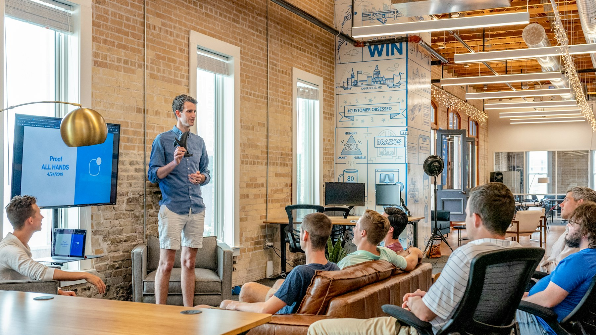

A city room with a global bench
Meet weekly where you live. When a client travels, Connect finds a trusted operator in 64 countries.
A closed weekly table — not a mixer. You brief the room, members open doors, and someone stays on the intro until work is signed.

Chapters run a timed agenda so every minute produces a useful contact. Watch a warm intro happen in the room, then follow it that same week.
Meet weekly where you live. When a client travels, Connect finds a trusted operator in 64 countries.
No competitor in the same category. When the room hears your trigger, the intro comes to you.
Briefs, a featured operator, education, and handoffs. The clock is the product.
Log 1-to-1s, pass intros, and keep the thread alive until the work closes.
How to brief a room, ask for a category, and lead a chapter without wasting the hour.
Same agenda. Pick the format that fits how you actually work.
Open conversation, 30-second briefs, one featured operator, education, then handoffs. Recognition at the end. No pitching from the floor.
Most seats see a useful intro inside 30–90 days if you show up, book 1-to-1s, and teach the room who to send you.
Yes. Sit in as a guest. Apply only if the table feels like your people. The membership circle interviews, then votes.